Mondrian generator#
The capabilities of the generator are presented below. In general, given Mondrian mask parameters the generator will create and save Mondrian images.
Usage#
Import the generator class#
import CFSVM.Generators.MondrianGenerator
Initialize the generator object#
gen = MondrianGenerator( ...
'../Stimuli/', ...
type='rectangle', ...
x_pixels=512, ...
y_pixels=512, ...
min_fraction=1/20, ...
max_fraction=1/8, ...
n_figures=1000,
cmap='original');
The arguments of the object constructor are as follows:
dirpath#
First, path to the parent directory in which will be created the Masks/ folder. The generated Mondrians will be saved inside this folder.
type#
Next, the type argument describes the shape of the figures, which are overlaid in the Mondrian. Currently available shapes are rectangle, square, ellipse, circle, rhombus, 45 degrees rotated square.
rectangle |
ellipse |
rhombus |
|---|---|---|
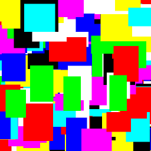 |
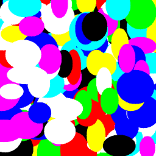 |
|
square |
circle |
45_rotated_square |
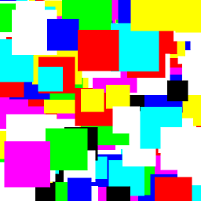 |
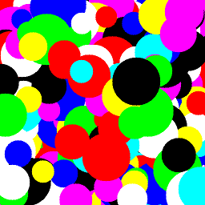 |
|


x_pixels & y_pixels#
These two arguments will define image resolution.
min_fraction & max_fraction#
Define the range of pixels a single figure can occupy. For example, if x_pixels and y_pixels are 512, min_fraction is 1/32 and max_fraction is 1/8, then the minimal and the maximal height and width of figures in the Mondrian will be 512/32=16 pixels and 512/8=64 pixels, respectively.
min_frac=\(\frac{1}{10}\), |
min_frac=\(\frac{1}{20}\), |
min_frac=\(\frac{1}{100}\), |
|---|---|---|
|
|
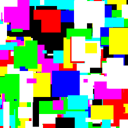 |


min_frac=\(\frac{1}{20}\), |
min_frac=\(\frac{1}{20}\), |
min_frac=\(\frac{1}{20}\), |
|---|---|---|
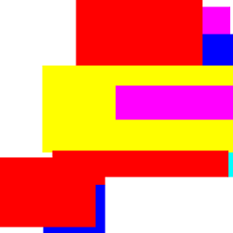 |
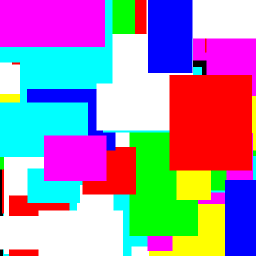 |
|

n_figures#
Number of figures overlayed in the Mondrian.
n_figures=10 |
n_figures=50 |
n_figures=100 |
|---|---|---|
|
|
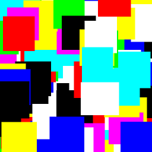 |


cmap#
Mondrian colormap, can be either MATLAB-styled colormap (three-column matrix with values from 0 to 1) or one of the following strings: ‘grayscale’, ‘rgb’, ‘original’, ‘reds’, ‘blues’, ‘greens’.
grayscale |
rgb |
original |
|---|---|---|
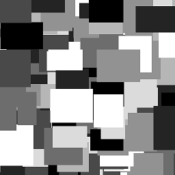 |
|
|
reds |
blues |
greens |
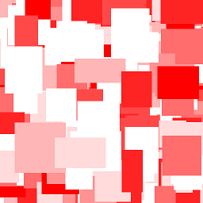 |
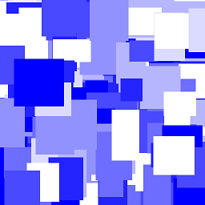 |
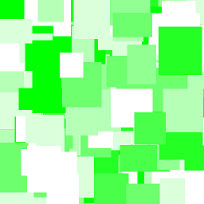 |


Modify cmap#
set_shades()#
You can use the set_shades() method to set a custom gradient for your Mondrians.
E.g., using RGB triplet for dark magenta [0.545, 0, 0.545] and 20 tones from the provided RGB to the white color
gen.set_shades([0.545, 0, 0.545], 20)
we can generate the following Mondrian:

Custom cmap#
You can always use a custom colormap by modifying the cmap property gen.cmap=[RGB triplet; RGB triplet; ...; RGB triplet] for your Mondrian. For example,
gen.cmap=[0.8 0.6 0.2;
0.4 0 0.6;
0.8 0 0.6;
0 0.8 0.8;
0.6 0 0.4;
1.0 1.0 1.0;
0 0 0];
will produce the following Mondrian:

Physical properties and power spectral density (PSD) of Mondrians#
If you provide the generator object with physical properties of the screen, it will calculate PSD for every generated Mondrian and save it as a CSV file. It will also plot the average PSD for the generated Mondrians.
The arguments of the set_physical_properties() are screen width in cm, screen width in pixels, screen height in cm, screen height in pixels, viewing distance in cm.
gen.set_physical_properties(59, 1920, 33, 1080, 45)
Rectangle |
Ellipse |
Rhombus |
|---|---|---|
|
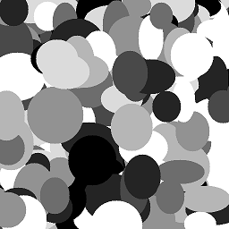 |
|
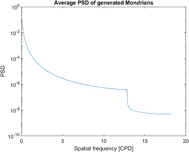 |
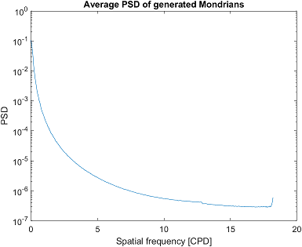 |
|


Generate#
gen.generate(50, fname='mond.png')
will finally generate 50 Mondrians named mond_1.png to mond_50.png inside dirpath/Masks/ folder.